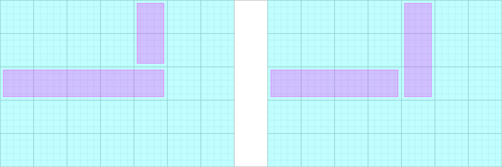

给定一张 $N \times M$ 的方格表，Takahashi 将以如下方式在每个格子上有一个正整数：
首先，在所有格子上填上 $0$。
然后，对于每个 $i = 1, 2, \cdots, N$，选择一个非负整数 $k_i$ ($0 \leq k_i \leq M$)，然后将第 $i$ 行的最左边的 $k_i$ 个格子上的整数增加 $1$。
然后，对于每个 $j = 1, 2, \cdots, M$，选择一个非负整数 $l_j$ ($0 \leq l_j \leq N$)，然后将第 $j$ 列的最上面的 $l_j$ 个格子上的整数增加 $1$。
容易知道，最终方格表上的每个数为 $0, 1, 2$ 三者之一。
问，Takahashi 通过这种方式一共可以得到多少本质不同的方格表？两个方格表本质不同，当且仅当存在一个位置 $\left( i, j \right)$，两个方格表中该位置上的数不同。
共一行，包含两个正整数 $N, M$ ($N, M \leq 5 \times 10^5$)。
输出一行一个整数，表示本质不同的方格表个数模 $998244353$ 的值。
如果求的是不同过程的个数，那么很简单，显然是 $\left( N + 1 \right)^M \cdot \left( M + 1 \right)^N$ —— 即所有独立的 $\left[ k_i \cdots, l_j \cdots \right]$ 的组合个数。
不过，这样统计肯定会有重复，即不同的过程产生相同的结果 (方格表的形态)，因此我们需要考虑重复的情况。
首先，最简单的 "重复" 当然是形如下图的重复：
对于这两种 "增加" 操作，我们把左边的情形称为 $\left( 3, 5 \right)-$"正态"，把右边的情形称为 $\left( 3, 5 \right)-$"反态"。其中 $\left( r, c \right)$ 表示右下角的格子位于第 $r$ 行第 $c$ 列 ($1 \leq r \leq N; 1 \leq c \leq M$)。
于是，$\left( r, c \right)-$"正态" 和 $\left( r, c \right)-$"反态" 就是最简单的重复情形。
那还有没有其它更复杂的情形呢？比如，我们把所有的 "反态" 换成 "正态" (ps: 这样的操作在有限步后一定会终止，因为 $\sum l_i$ 严格递减)，会不会就一定是唯一的呢？
下面证明：对于两张本质相同的方格表 $G_1, G_2$，设生成它的过程 (操作序列) 为 $P_1, P_2$，则 $P_1, P_2$ 中至少一个存在 "反态"。
去除 $P_1, P_2$ 中相同的操作。设去除后，$G_1$ 中非 $0$ 格子中，行标最大，如果有多个则取列标最大的格子为 $\left( r, c \right)$。
则由于 $P_1, P_2$ 的操作序列不同，且它右边，下边没有其它非 $0$ 格子，则说明它们产生这个格子的方向是不同的。
不妨设 $P_1$ 通过横向第 $r$ 行 ($k_r$) 产生这个格子，$P_2$ 产生这个格子的方法为纵向第 $c$ 列 ($l_c$)。
则有 $0 \leq K_r < c$ ($K_r$ 表示方格表 $G_2$ 操作时的 $k_r$)。考虑 $G_2$ 的格子 $\left( r, K_r + 1 \right)$，可知 $P_2$ 中存在 $\left( r, K_r + 1 \right)-$反态，证毕。
而刚才又已经说明，对于任意一组存在 "反态" 的操作，都可以通过连续将 "反态"转化为与之等价的 "正态" 这一系列操作，将其转化为纯 "正态" 操作，于是，我们得到了：
存在一一映射 $f$，将一张方格表映到只有 "正态" 的过程。
于是，我们只需要统计只有 "正态" 的过程总数即可。
那具体该怎么统计呢？容斥原理啊！
具体地，我们可以统计出，有 $i$ 个已知 "反态"，其余情形任意的方案数。
容易证明，所有的 "反态" 必定不同行不同列 —— 因为对于一个 "反态"，只要左边的矩形确定了，它上方的矩形也就确定了，反之亦然。
先枚举这 $i$ 个 "反态" 的行标集合，一共 $\dbinom Ni$ 种，它的列标集合一共有 $\dbinom Mi$ 种。它们之间的配对是一个 $i$ 个元素的完美匹配，共有 $i !$ 种方案。然后，对于剩下的 $N - i$ 行，可以从 $M + 1$ 个值中任意选择，共 $\left( M + 1 \right)^{N - i}$，列同理。
从而，有 $i$ 个已知 "反态" 的方案数就等于 $$ \binom Ni \cdot \binom Mi \cdot i ! \cdot \left( N + 1 \right)^{M - i} \cdot \left( M + 1 \right)^{N - i} $$
最后套一层容斥，由于前面已经枚举了集合，因此容斥系数为 $\pm 1$。最终的答案表达式就是 $$ \sum_{i \geq 0} \left( -1 \right)^i \cdot \binom Ni \cdot \binom Mi \cdot i ! \cdot \left( N + 1 \right)^{M - i} \cdot \left( M + 1 \right)^{N - i} $$
时间复杂度 $O \left( \min \left\{ N, M \right\} \right)$。
#include <bits/stdc++.h>
typedef long long ll;
const int N = 500054, mod = 998244353;
int n, m;
int inv[N];
ll PowerMod(ll a, int n, ll c = 1) {for (; n; n >>= 1, a = a * a % mod) if (n & 1) c = c * a % mod; return c;}
int main() {
int i, cur; ll ans, coef;
scanf("%d%d", &n, &m), inv[1] = 1;
if (n > m) std::swap(n, m);
ans = cur = PowerMod(n + 1, m, PowerMod(m + 1, n));
coef = PowerMod((n + 1ll) * (m + 1ll) % mod, mod - 2, mod - 1);
for (i = 2; i <= n; ++i) inv[i] = ll(mod - mod / i) * inv[mod % i] % mod;
for (i = 1; i <= n; ans += cur, ++i)
cur = cur * coef % mod * (n - i + 1ll) % mod * (m - i + 1ll) % mod * inv[i] % mod;
printf("%d\n", int(ans % mod));
return 0;
}
坑1：注意里面的 $i !$ 乘到其中一个组合数中，以减小常数。
坑2：由于当 $i \to i + 1$ 时后面两项需要乘的系数是一个定值，因此可以先将其预处理出来，以做到 $O \left( n \right)$ 而不是 $O \left( n \log n \right)$ (此处 $n$ 表示 $\min \left\{ N, M \right\}$ 或 $N + M$)。